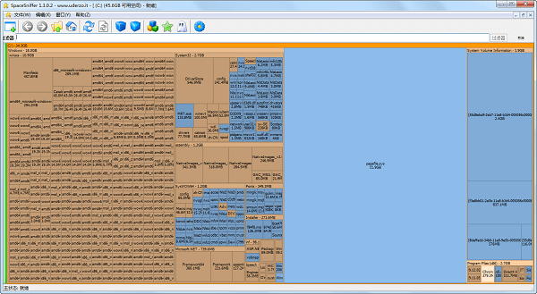

以直观的块状图方式展示文件和文件夹的大小，让您一目了然地看到空间使用情况。
快速搜索特定类型的文件或按大小过滤，轻松定位需要管理的内容。
SpaceSniffer 使用树形图（Treemap）技术，将您的磁盘空间使用情况转化为直观的视觉区块。每个区块的大小与文件或文件夹的实际大小成正比，让您立即识别出哪些内容占用了最多空间。
无需等待漫长的扫描过程完成，SpaceSniffer 边扫描边显示结果，您可以在扫描进行时就开始探索和操作。点击任何区块可深入查看详情，双击即可在资源管理器中打开。
SpaceSniffer(磁盘空间分析工具)是一款功能强大的磁盘空间分析工具，软件界面简洁，拥有安装、删除、复制、剪切、粘贴、转移、重命名、查看等编辑功能，可以让您硬盘中文件和文件夹的分布情况的应用程序，通过使用TreeMap的可视化布局，你可以直观地看到在你硬盘上大的文件和文件夹。
参考：3DMGAME
参考：SpaceSniffer.com.cn